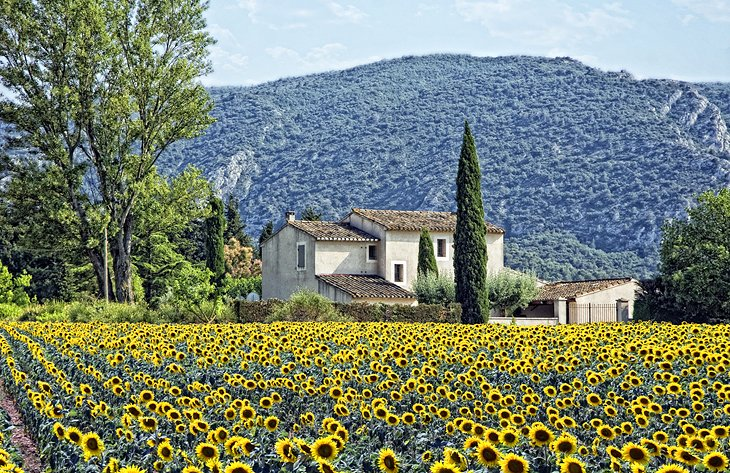
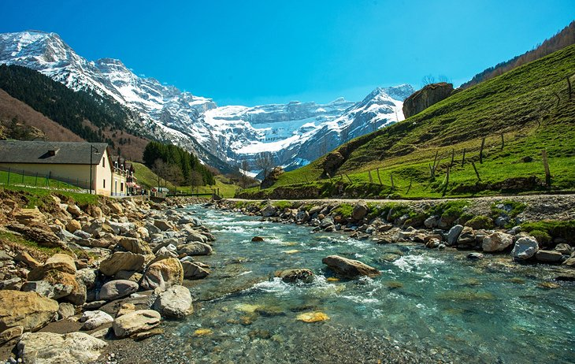

ABOUT PARIS, FRANCE
Paris is the capital and most populous city of France, with an estimated population of 2,175,601 residents as of 2018, in an area of more than 105 square km. Since the 17th century, Paris has been one of Europe's major centers of finance, diplomacy, commerce, fashion, science and arts. The City of Paris is the centre and seat of government of the Île-de-France, or Paris Region, which has an estimated official 2017 population of 12,174,880, or about 18 percent of the population of France.
GETTING TO PARIS, FRANCE
You will probably arrive at either Charles De Gaulle or Orly Airport, both of which are about 45 minutes from the center of Paris unless there is traffic. If nobody is meeting you the easiest way to get into the city is by taxi which will cost a little under 25 euros from Orly and around 50 euros from De Gaulle.
OTHER PLACES TO VISIT
Provence
Provence basks under the Mediterranean sun. This alluring countryside has a rugged and earthy appeal. The rolling hills are covered with a patchwork of small farms, olive groves, sunflowers, and lavender fields. The air is fragrant with the aroma of rosemary, sage, and thyme, herbs that grow in abundance and are used in the local cuisine. In this dreamy landscape, Impressionist painters found inspiration to create vibrant works of art.

The Côte d'Azur
The Côte d'Azur (French Riviera) is a glamorous stretch of Mediterranean coastline named for its deep azure-blue waters. The skies are often a mesmerizing cerulean hue as well, thanks to the sunny weather most of the year in this area of southern France.
